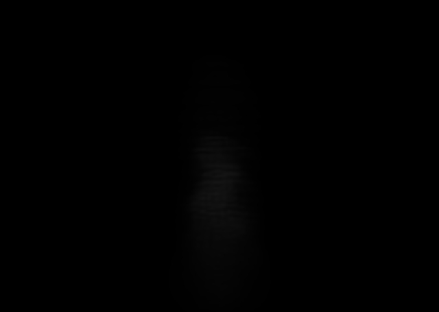
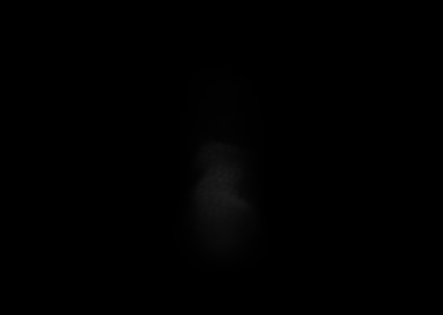

Recorded Native
Pre-absorption dense ray integral

49,536 one-mode blocks

100,215 cross-boundary rows

98,929 local two-mode rows

Absolute luma difference
Question: can two coherent residual modes inside each rigid 4x4x4 neighborhood recover the missing tongue/cavity/sheet topology better than cross-block overlap?
Controlled change: exact R160 step 45 body target, frozen 1,024 control, one rigid partition, cameras, extinction scale 0.2, coverage 1, display exposure 8x. R4 bisects each geometrically splittable parent at a residual-mass weighted median between distinct full-covariance principal-axis projection buckets. It emits 98,929 residual rows; R3 emits 100,215 overlap rows.
Metric: versus R2, R4 changes MSE by +3.40% native and -0.37% elevated +35. Versus R3, native regresses 10.75%. This sheet asks whether any visible topology gain justifies that loss.



